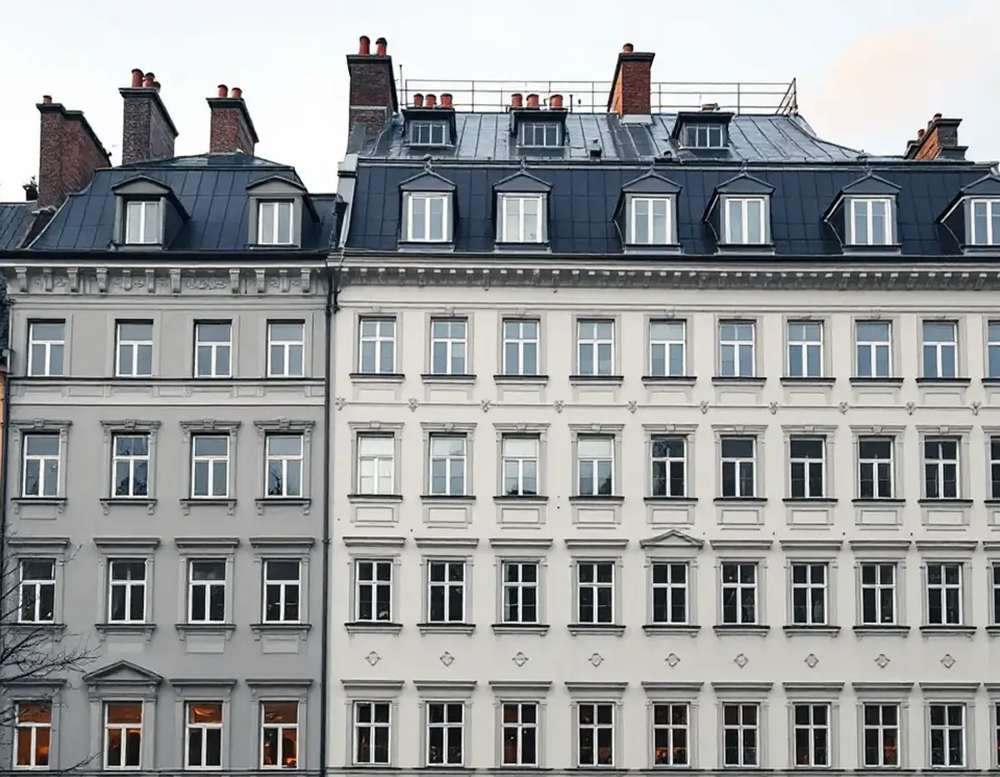
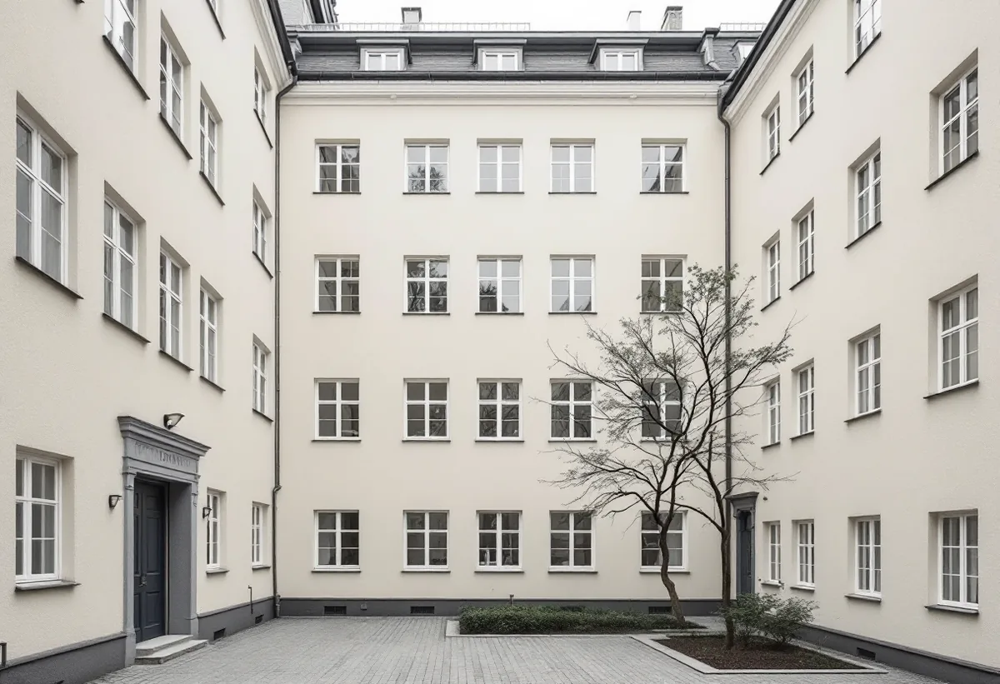
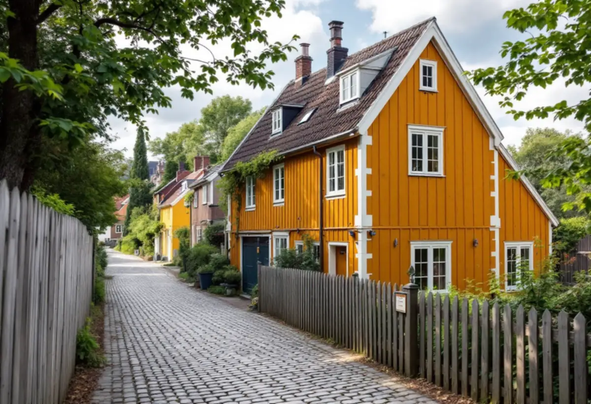

Besiktning
Gratis besök där vi mäter och bedömer fönstren.
På Södermalm är nästan alla bostäder lägenheter, och ett fönsterbyte beslutas därför oftast av en bostadsrättsförening. Om fasaden vetter mot gatan eller gården gör skillnad för lovet. Geal Entreprenad AB tar fram underlaget till styrelsen och bygglovet och byter fönster i flerbostadshus och de få småhusen på Södermalm.

Stadens områdesfakta för 2025 räknar 77 525 bostäder i Södermalms stadsdelsområde. 43 680 av dem är bostadsrätter, 23 361 är hyresrätter hos privata värdar och 10 471 hör till allmännyttan. Bara 13 bostäder ägs med äganderätt. Nästan varje fönsterbyte på Södermalm är alltså en fråga för en förening eller en fastighetsägare.
Bostadsrättslagen säger att medlemmen håller lägenheten i gott skick om inte stadgarna säger något annat. Vem som ansvarar för fönstren avgörs alltså av stadgarna. Vi tar fram ett underlag som styrelsen kan fatta beslut på, med uppmätning, förslag och tidsplan. Har lägenheten särskilda kulturhistoriska värden krävs enligt samma lag styrelsens tillstånd för åtgärder som påverkar de värdena, även på insidan.

Stockholms stad skriver att det för byggnader som inte är en- eller tvåbostadshus, till exempel flerbostadshus, krävs bygglov om ändringen görs på en fasad eller ett tak som vetter mot allmän plats. Ändringar på sidor som inte vetter mot allmän plats kan göras utan lov om vissa förutsättningar är uppfyllda. Ligger huset i ett särskilt kulturhistoriskt värdefullt område krävs lov ändå.
Som ändring av fönster räknar staden bland annat nytt material eller ny kulör, andra profiler och spröjs, en annan upphängning och en ändrad indelning. Ett byte mot fönster med samma utseende är därför ofta det enklaste. Staden skriver att bygglovsplikten också beror på byggnaden, eftersom ett hus kan ha karaktäristiska fönster eller en tidstypisk indelning där en ändring påverkar både fasaden och husets karaktär. Vi kontrollerar Stadsmuseets klassificeringskarta och detaljplanen för just ert hus innan förslaget lämnas.
Översiktsplanens riksintressedel beskriver den klassiska stenstaden från 1870–1930 med utbredning på bland annat Södermalm. Gatufasaderna är tydligt uppdelade i sockelvåning och huvudfasad, medan gårdsfasaderna är enklare. När gatufasaden är rikare utformad än gårdsfasaden kan även fönstren skilja sig åt, och det kontrollerar vi på plats.
Vill föreningen byta alla fönster samtidigt brukar vi därför föreslå två typer: en mot gatan som följer de ursprungliga profilerna och en enklare mot gården. Riksintressedelen nämner också att mer begränsade förändringar som inre modernisering prövas enligt plan- och bygglagens varsamhetskrav.
Från bebyggelsen på malmarna före stenstaden återstår enligt riksintressedelen omkring 300 hus, mestadels på Södermalm. Värdekärnorna är Fjällgatan, Katarinaberget, Vita bergen, Åsöberget och Östra Mariaberget. Till karaktärsdragen räknas byggnadsdetaljer som fönster, entréportar och ornamentik, som tillsammans bildar en karaktäristisk helhetsbild.
I de här husen är ett byte sällan förstahandsvalet. Där brukar det vara bättre att laga och komplettera de befintliga bågarna, och då finns fönsterrenovering på Södermalm. Måste ett fönster ändå bytas tillverkas det nya efter det gamla. Mer om tjänsten finns under fönsterbyte.

Gratis besök där vi mäter och bedömer fönstren.
Förslag och tidsplan till styrelsen.
Ritningar för fasaden mot gatan.
Fönster efter uppmätning, gata och gård.
Ett fönster i taget, med skydd i lägenheterna.
Foder, bleck och genomgång med föreningen.
Skatteverket ger inget rotavdrag för att byta fönster i en bostadsrätt, och inte heller för arbete mellan eller på utsidan av fönstren. Arbete på insidan av befintliga fönster ger avdrag, till exempel att byta glaset i den inre bågen eller montera tätningslist, om det är något du som medlem ansvarar för enligt stadgarna.
Avdraget är högst 30 procent av arbetskostnaden och högst 50 000 kronor per person och år. Material och resor ger inget avdrag, och Geal drar avdraget direkt på fakturan.
Antal fönster, profiler mot gatan och gården, om bleck och foder också ska bytas, bygglovsritningar, ställning eller skylift mot innergården, och hur bytet planeras för att störa de boende så lite som möjligt. Efter besiktningen får föreningen ett skriftligt kostnadsförslag.
Byta eller renovera fönster.
Fönsterbyte i Stockholm →Takbyte, takbesiktning och plåtarbeten.
Takläggare på Södermalm →Stenstad, storgårdskvarter och bergen.
Takrenovering på Södermalm →Vattenskador, ansvar och husens olika åldrar.
Badrumsrenovering på Södermalm →Inreda vinden till bostäder.
Byggföretag på Södermalm →Putsen mot gatan.
Fasadmålning på Södermalm →Kalkputs, kalkfärg och plåt på lister.
Fasadrenovering på Södermalm →Föreningens fönster, besiktigade före beslut.
Fönsterrenovering på Södermalm →Renovera, riva och sortera golvet.
Golvläggare på Södermalm →Slipa golven i den nyköpta lägenheten.
Golvslipning på Södermalm →Kokvrå, gasspis och kulturvärden i lägenheten.
Köksrenovering på Södermalm →Äldre färglager, bättring och provytor.
Målare på Södermalm →Takkupor, vindar och äldre tak.
Plåtslagare på Södermalm →Väggar, dörrar och förvaring i lägenhet.
Snickare på Södermalm →Nytt tak på föreningens eller hyresvärdens hus.
Takbyte på Södermalm →Ny tapet och gamla tapetlager.
Tapetsering på Södermalm →Lägenheten i takt med stambytet.
Totalrenovering på Södermalm →